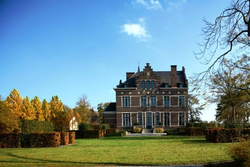

Waar kan je Jonathan Billen tegenkomen?
Neerlinter (1578 inwoners + Jonathan Billen) komt in 1139 de eerste keer voor als Niderlintere en Nederlintre. Het was een van de oudste heerlijkheden van Brabant. In 1146 ontstond de heerlijkheid Neerlinter door afscheiding van Diest. Het bestond uit de vier gehuchten Neerlinter-Dorp, de Dries, de Heide en de Ransberg. Door slachtingen aangericht door vele vreemde legers en epidemieën kende het bevolkingsaantal heel wat hoogtes en laagtes. De laatste beproeving van het dorp kwam er in 1914, toen Duitsers 76 woningen vernielden. De Sint-Foillanuskerk is het resultaat van verschillende bouwcampagnes die reeds in de 15de eeuw startten. Op het dorpsplein prijkt een standbeeld van de patroonheilige boven een waterpomp, die in 1860 geïnstalleerd werd. Een brand verwoestte in 1693 gedeeltelijk het kasteel van Neerlinter, gelegen op een omgracht domein. In het begin van de 18de eeuw werd het heropgebouwd en later uitgebreid. Op 27 mei 1878 reed de eerste trein langs het traject Tienen-Diest. In 1894 werd Neerlinter Dorp op aanvraag als stopplaats geopend.
Enkele bezienswaardigheden in de regio zijn:
De Golden Geet Bridge:

Het Kasteel
Het Vinne

Zeker eens de moeite om Neerlinter te bezoeken!